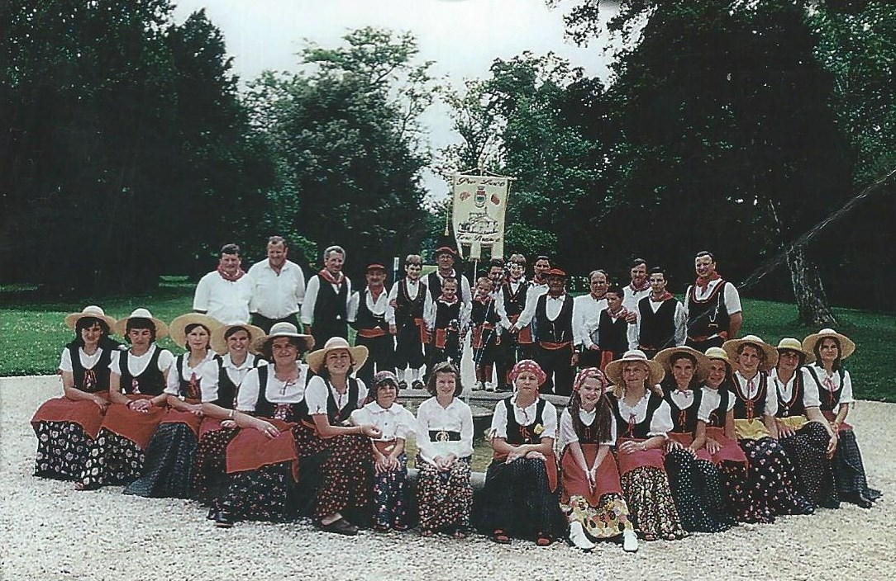

La Pro Loco di Zero Branco nasce nel 1967 e, al giorno d'oggi, conta oltre 300 soci. Varie sono le attività che le hanno consentito di avere una certa rilevanza nel tessuto sociale del paese: la realizzazione di una pista di pattinaggio presso l'oratorio, dei campi da tennis di Villa Guidini, di un forno per la cottura delle ceramiche della Scuola Media Europa, dell' impianto di illuminazione del primo campo sportivo. Ha inoltre acquistato un'intera Enciclopedia Treccani, dei lettori DVD, macchine fotocopiatrici e macchine fotografiche sia per la biblioteca che per le scuole.
La Pro Loco collabora attivamente con il Comune di Zero Branco ed altre Associazioni quali Colmelli Zairo, Coro Palio, Anziani, Avis, Associazioni d'Arma, allestendo manifestazioni gastronomiche per promuovere il territorio ed i prodotti tipici, così come manifestazioni culturali per promuovere iniziative di vario tipo.
